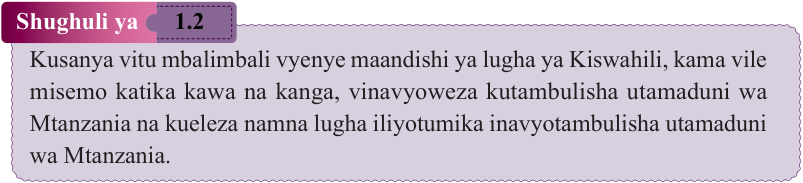
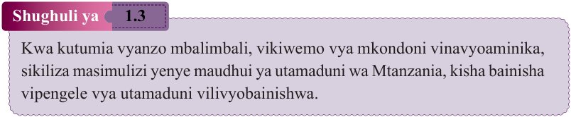
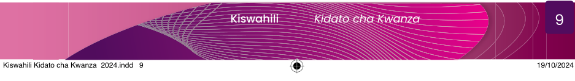

Maswali

Shughuli ya 1.2
Kusanya vitu mbalimbali vyenye maandishi ya lugha ya Kiswahili, kama vile misemo katika kawa na kanga, vinavyoweza kutambulisha utamaduni wa Mtanzania na kueleza namna lugha iliyotumika inavyotambulisha utamaduni wa Mtanzania.

Shughuli ya 1.3
Kwa kutumia vyanzo mbalimbali, vikiwemo vya mkondoni vinavyoaminika, sikiliza masimulizi yenye maudhui ya utamaduni wa Mtanzania, kisha bainisha vipengele vya utamaduni vilivyobainishwa.
Umuhimu wa kujifunza Kiswahili
Soma mahojiano baina ya Mwandishi wa habari na Mwalimu, kisha jibu maswali yanayofuata.
Siku moja, mwandishi wa habari alifanya mahojiano na Mwalimu wa somo la Kiswahili kuhusu umuhimu wa kujifunza Somo la Kiswahili.
Katika mahojiano hayo, mambo mbalimbali yalizungumziwa ambayo ni zao la kujifunza Somo la Kiswahili.
Mahojiano hayo yalikuwa kama ifuatavyo:
